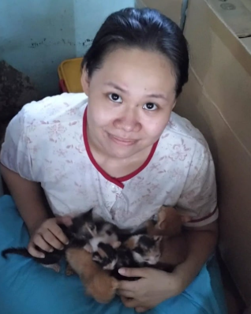
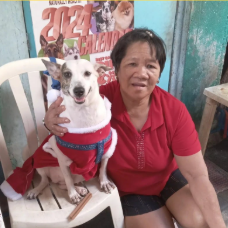
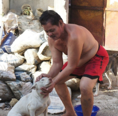
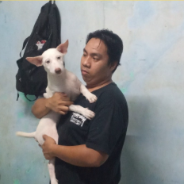
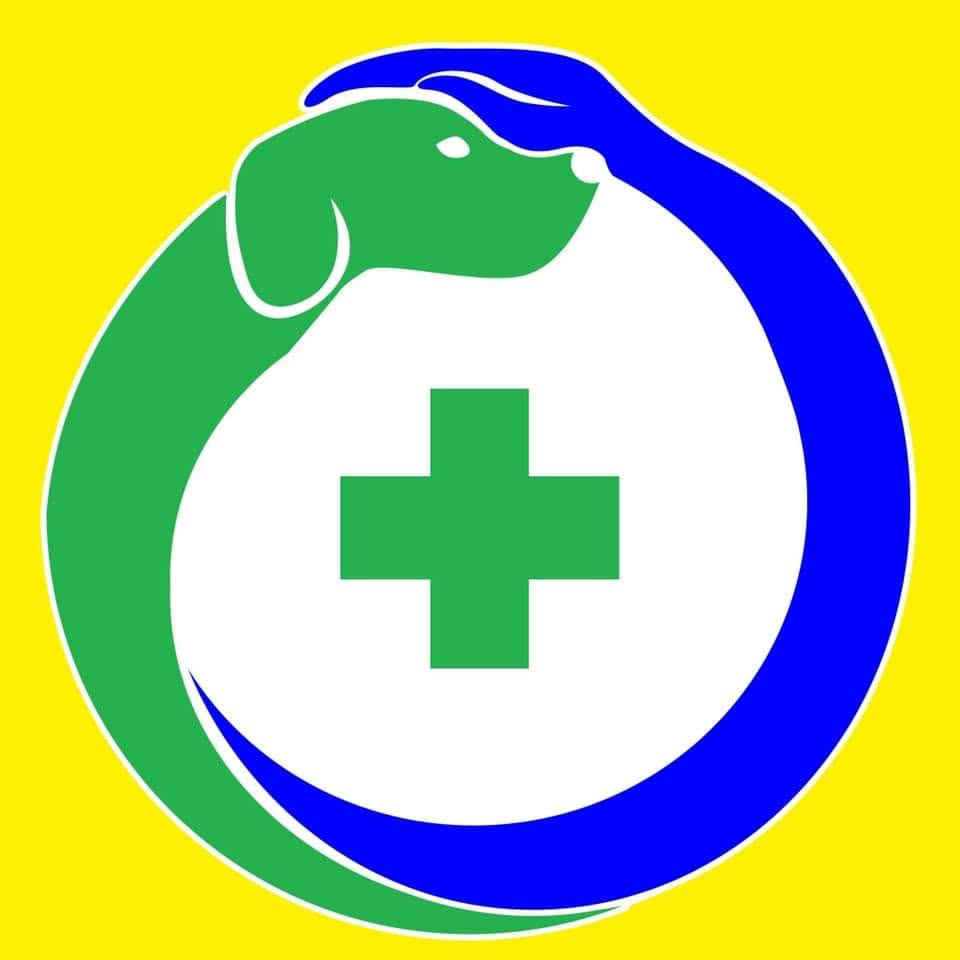
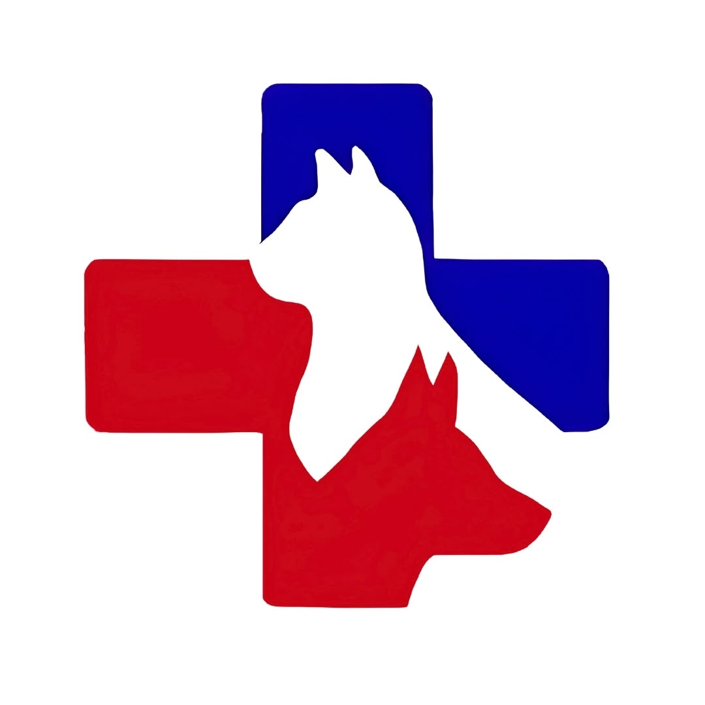
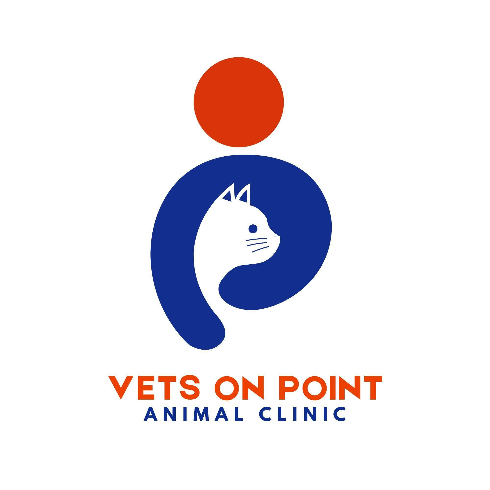

THIS IS ME, ROSIE
I generally manage Shelter of Light alone, I am also helped with some physical labor by my loving family and our virtual volunteers. I am highly grateful to all of them as SoL would not be possible without their love and help.
We have undoubtedly gone through a lot of challenges. Some of these challenges, we are still trying to solve. We honestly do not know how long SoL can keep on, but we are not giving up. We will keep watering the hope in our hearts and looking forward, I will still persevere to build our dream SoL sanctuary for our rescued cats and dogs. I will work even harder to make this dream come true.

I generally manage Shelter of Light alone, I am also helped with some physical labor by my loving family and our virtual volunteers. I am highly grateful to all of them as SoL would not be possible without their love and help.

Nanay helps me care for the cats, especially the kittens. She cleans, gives vitamins, and feeds the cats and some of the dogs.

Tatay takes care of of some of the dogs of SoL. He is particularly in charge of walking them and of cooking for the SoL family and furmily.

Ralph cleans the house when he can and cares for most of the dogs. He accompanies me also at the vet.

One of our first vets, Vetlink has accepted us when we were very new in the animal welfare field. They have cared for a lot of our rescues in the past years, especially Doc Eugene and Doc Gina.

TFP has demonstrated expertise and care for our rescues. We have the utmost trust in their capabilities. They have been a true blessing. Special thanks to Ms. Cindy, Doc Zander, Doc Jan, Doc Weelen, and the rest of the team.
Doc Gab has been our vet for years. Whenever we have a kapon, they are the ones we connect with. Thank you to the team, especially to Doc Gab, Doc Pao, and Doc Simon.

Our current vet clinic, they have also shown utmost kindness, understanding, and patience towards us and our rescues. They treat everyone with fairness which we utterly appreciate.